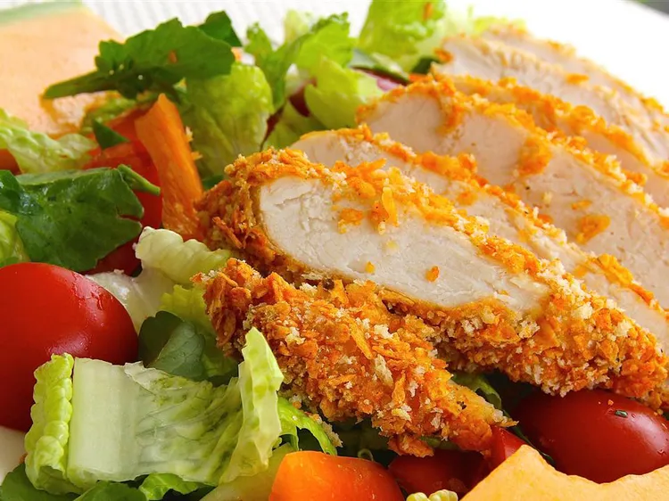

Spicy Doritos Chicken
Back to homepage

A nice little twist on breaded chicken.
Ingredients
- 1 Egg
- 1 Tablespoon of water
- 3/4 Cup of crushed doritos
- 1/3 Cup of breadcrumbs
- 2 Skinless boneless chicken breasts
Steps
- Preheat oven to 175C
- Beat egg, water, and pepper together in a bowl
- Mix doritos, breadcrumbs, and pepper together in a separate bowl
- Dip chicken into the egg mixture until coated
- Bake in oven for about 25 minutes